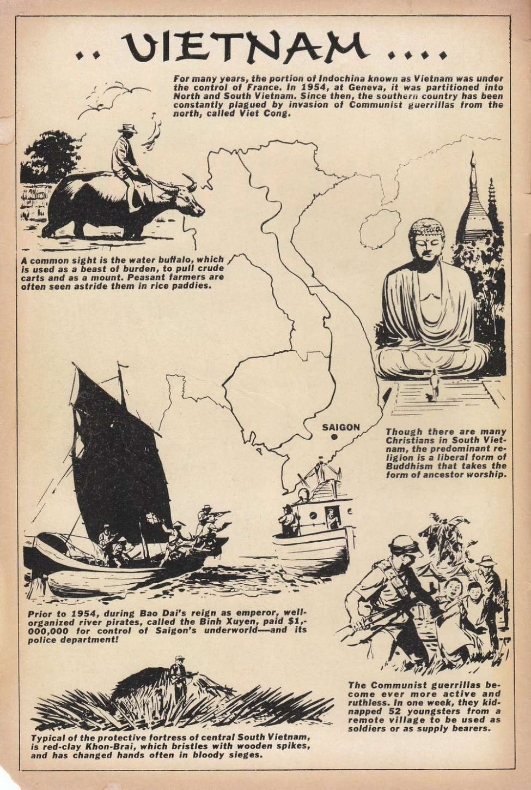

You're the fact-checker. For each part: read the page on the left → get the check right → write 1–2 sentences. Done = 4 green parts (5 checks + 3 short answers), then turn in at the bottom.
Content note: This is a real 1962 war comic. It takes one side on purpose. It shows fighting, and the Americans talk down to the Vietnamese soldiers they train. One racist slur on page 8 is covered with a black box.
Word help (tap to open)
- Viet Cong = Communist fighters in South Vietnam, backed by North Vietnam
- Guerrilla = a fighter who hides, then attacks by surprise
- Adviser = a soldier sent to train another country's army
- Rangers = a special, tough fighting unit
- Red = 1960s slang for a Communist
- Containment = the U.S. plan to stop communism from spreading
- Requiem = a song for the dead

Click the page to make it bigger.
Turn in your work
Your work saves on this device, so you can come back later. Your teacher sees it after you turn it in.
Comic: Jungle War Stories #1 (July–Sept. 1962), Dell Publishing Co., New York. Public domain (published before 1964, copyright not renewed); scan from Comic Book Plus. Reader pages are the inside front cover ("Vietnam") and the 8-page story "Requiem for a Red…". One racist slur on reader page 8 is covered.